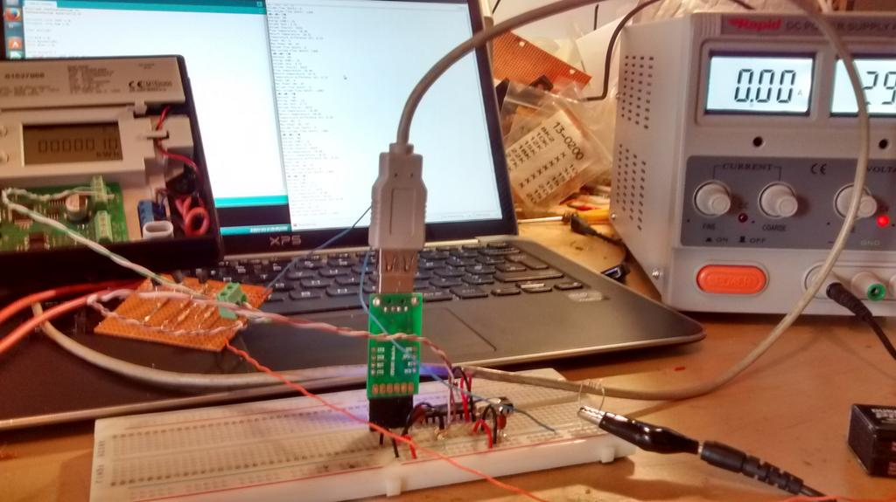
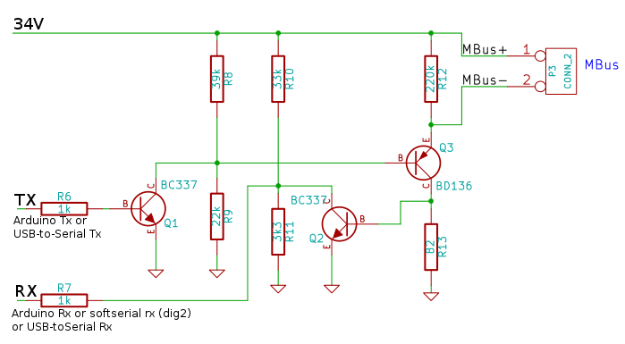

Is there any activity in OpenEnergyMonitor on the M-bus protocol? (M-Bus = Meter Bus, not Multi-Bus). Hardware level converters from M-Bus to RS-232/ or 485 / USB / software ? A number of energy monitoring devices and sensors becoming available that support M-Bus.
M-Bus ?
Submitted by Guest on Mon, 21/01/2013 - 19:25»
Re: M-Bus ?
BUMP Post.
Would be interesting in this too, M-Bus is rather interesting as it is similar to the I2C bus. Commercial products to read the Mbus are often insane priced (250+).
--- Update 3-Sep-2013 ---
Reading the M-Bus specs there is a IC TSS721 that does most of the job.
TSS721 (source: http://www.m-bus.com/mbusdoc/md4.php)

And a very simple one based on RS232:
I'll have a go with this later on.
Wxll
Re: M-Bus ?
Hi, did you have any success with the m-bus reader using the rs232 level converter (as in the tiff-image) ?
Re: M-Bus ?
no not yet. I glanced over it recently and collected a little bit more info but haven't build anything yet.
I did found some one who did quite some work and shared his:
http://a385e-5.de/?cat=11
I think I go with his work on this, looks good.
Re: M-Bus ?
Hi there,
I've been using libmbus since version 0.3 and have always been very happy with it... I'ld be very interested in getting a deeper integration to work.
My current solution in regards of emoncms is to simply run curl for every value I transmit... So there's a shell script run every 15min's from cron, and that script calls libmbus get's the mbus response extracts the value's and generate's a curl line.
Think it would be perfect to have like a emonhub framework to read from plugins like libmbus or the tools from the volkszaehler.org project: like
never tested vzlogger, but as it reads so many different meter's I would love to...
Re: M-Bus ?
John Cantor and I are looking at how we could connect a couple of different heat meters with m-bus to the OpenEnergyMonitor system for heatpump monitoring. I dont yet have any experience with m-bus, I might try starting by building the circuit here https://github.com/rscada/libmbus/tree/master/hardware looking at both libmbus there and http://wiki.volkszaehler.org/software/controller/m-bus as Mircsicz suggests.
But I wonder if anyone else has more experience of this and can give me an idea of what might be involved in getting data out of a kamstrup 402 with mbus module http://www.termonet.rs/pdfpr/Data%20Sheet%20%20MC402.pdf or a sontex http://www.rhimetering.co.uk/pdf/Sontex-Superstatic-449-Datasheet.pdf
Re: M-Bus ?
http://www.openmuc.org
[Please read http://openenergymonitor.org/emon/node/10391 - Moderator]
Re: M-Bus ?
(The link above should be http://www.openmuc.org not http://www.openmuc.org%20/)
Also see https://code.google.com/p/iotsys/wiki/MBusConnector#M-Bus-Master_for_Raspberry_Pi
and in particular towards the end of that page is a schematic and layout for a Pi gpio -> M-Bus interface
It would cause a conflict for use with a RFM2Pi, but maybe a RFM69Pi's IO could be utilized with a custom sketch to "merge" M-Bus and RFM packets into the Pi's serial port ?
Paul
Re: M-Bus ?
Thanks a lot Paul. I will try those out.
Re: M-Bus ?
Good news, John Cantor (http://heatpumps.co.uk/) and I got the MBUS reader circuit by rscada https://github.com/rscada/libmbus/tree/master/hardware to work and their libmbus library and command line mbus reader utility, reading data from a kampstrup 402 heat meter with the intention of using it for heatpump heat output monitoring. We then implemented a very lightweight kampstrup 402 meter specific reader for Arduino.

We started by building the simple circuit below and connecting the TX and RX lines to a USB to Serial adapter connected to a laptop and providing 34V from a bench top DC power supply. We didn't have the BD136 PNP transistor so we used a 2N3906 PNP instead, which worked fine.

We then downloaded libmbus library https://github.com/rscada/libmbus and installed on linux :
ch libmbus
sh build.sh
sudo make install
Running
$ mbus-serial-scan /dev/ttyUSB0
reported "Found a M-Bus device at address 68". Running
$ mbus-serial-request-data -b 2400 /dev/ttyUSB0 68
Printed the following XML output: http://openenergymonitor.org/emon/sites/default/files/example_xml_output.txt.
With the bench top power supply connected and reading over USB to serial we could reduce the voltage driver all the way down to 18V and still receive a full frame from the MBus device, although I dont know how reliable that would be.
With the data being read over USB-to-Serial I then decided to dig a little into the protocol format to see if it would be possible to implement a reader that ran on an Arduino rather than needing a serial port on a computer or raspberrypi. There seems to be quite a few people looking to do this from searching on the internet but I couldn't find a solution that worked on an Arduino UNO the full libmbus library stores a lot of information that relates to particular byte values in large arrays which would completely fill the memory on the Atmega328.
By reading the MBUS protocol and kamstrup data frame description in the Kamstrup MBUS manual here http://www.oresundskraft.se/media/202136/m-bus_protokoll_f_r_multical_40... and cross checking that by reading the byte values that where being received from the kamstrup meter and the source code for libmbus I put together a barebones Kamstrup 402 specific reader for Arduino:
http://openenergymonitor.org/emon/sites/default/files/kamstrup402_mbus_r...
Commands sent to the MBUS device need to be even parity 1 stop bit, the arduino hardware serial library supports this but the softserial arduino library does not. I tried various suggested modifications to the softserial library but couldnt get it to work so in the end settled on the temporary solution of sending the command string on the hardware serial tx line and receiving the reply on the softserial rx line. This at least kept most of the activity off the hardware serial port used to communicate with the computer.
Here's an example of the print out from the arduino reader showing the part of the kamstrup heatmeter data frame that we where most interested in:
Energy (kWh): 10
Volume (m3): 2.72
Ontime (hours): 2423
Flow temperature: 18.36
Return temperature: 18.16
Temperature difference (K): 0.20
Power (W): 0
Max Power (W): 47
Volume flow (m3/h): 0
Max volume flow (m3/h): 1390
To decode the data frame its a matter of reading each byte in the frame and understanding from the data frame specification what each byte corresponds too. For example the first part of the header that specifies the frame type, data length and address is read like this:
start1 = bytes[0]
length1 = bytes[1]
length2 = bytes[2]
start2 = bytes[3]
control = bytes[4]
address = bytes[5]
control_information = bytes[6]
The first record starts at byte 25 and is 6 bytes long, the first 2 bytes corresponding to type and units and the last 4 bytes the value. Which can be decoded with, where i is the start byte of the record (i.e 25)
value = bytes[i+2] + (bytes[i+3]<<8) + (bytes[i+4]<<16) + (bytes[i+5]<<24)
It would be good to do some more reading up on the protocol in order to create a more generic less hardcoded arduino library for reading MBUS meters and sort the software serial library even parity bit issue but the above gives a working initial solution that can be built upon and integrated into the OpenEnergyMonitor system. Data could now be sent via RFM12/69 to an emonbase for logging in emoncms.
A small step-up converter can be used to provide the 34V required for the MBUS, we're going to try this one http://www.ebay.co.uk/itm/XL6009-DC-DC-Voltage-Step-Up-Boost-Converter-r...
Re: M-Bus ?
Hi Trystan,
Im working on to connect another meters with M-bus interface to Emoncms. I read your great tutorial in above (great job you made!) and I replicated HW interface you described. I have conected energy meter Siemens WFN21 with M-bus interface and it works ! Using libmbus at my Ubuntu desktop I got very similar structured output, like you got from your Kampstrup. There is just another set of registers and values represented by them, but registers structure seem to be the same. Now I will try to modify your .ino script for reading registers of my energy meter and to read values by my experimental Arduino Mega (for more HW Serials available).
Did you make any progress since your status description above from the end of May?
Radek
Re: M-Bus ?
Hello Radek, great to hear, yes we did make a little more progress, we built a couple of the reader circuits connected to emonth's to create a wireless emonth mbus reader. We're still reading the mbus meter address manually first.
Here's the firmware example for an emonth that connects to the reader circuit and then transmits via rfm12: http://openenergymonitor.org/emon/sites/default/files/kamstrup402_mbus_r...
It would be good to get device address discovery going as part of this.
Re: M-Bus ?
A little more progress on this. The hack that I was using above to first send the MBUS command on hardware serial and then receive the data on software serial can now be replaced with this nice software serial library by @ledongthuc on github
https://github.com/ledongthuc/CustomSoftwareSerial
This alternative to the Arduino software serial library allows configuration of the software serial parity bit, stop bits and number of data bits which makes it easy to use 8 bit, even parity with one stop bit as required by MBUS.
I've attached a reworked example of the last example I posted which uses this library, It also reads 2x DS18B20 temperature sensors and two analog inputs (flow temperature and flow rate) from a grundfos vortex flow meter which Im parallel testing alongside a kampstrup heatmeter.
Re: M-Bus ?
Hello TrystanLea.
I'm doing a M-BUS master device. I wonder exactly how many slave can be connected to the hardware circuit discussed above in https://github.com/rscada/libmbus/tree/master/hardware.
Do you have tested many devices? How many?
I need to connect 8 slaves, and I need to know if the hardware circuit discussed above, it is sufficiently robust to endure 8 slaves. Because documentation sets "Bus-driver for up to three meters"
Then, I look a circuit hardware in ANALOG-BOARD for the Meter Bus Application of Texas Instruments http://cxjr.21ic.org/uploadfile-/200667162428749.pdf .Which it is more robust, it but more expensive. I do not know whether it is worth implement for 8 slaves, this circuit of Texas instruments.
Do you have tested many slaves with the circuit of libmbus? How many slaves?
Thank you very much,
Albert
[2 further copies of this post have been deleted. Please READ "Read this before posting" under the heading SITE MAP. Moderator (RW)]
Re: M-Bus ?
Hi Albert -
The simple interface circuit will not work for more than about 3 or 4 M-bus slaves. This circuit detects a '0' from the slaves whenever the total bus current is above about 7 mA. Each slave is allowed to draw up to 1.5 mA (and as little as 0 mA) at all times. When a slave wants to send a '0', it will draw an additional 10 mA. So, with 4 slaves, you would see anywhere from 0 to 6 mA all the time, and somewhere between 10 and 16 mA when a '0' is transmitted. This will give valid results with the simple circuit, because anything less than 7 mA will be received as a '1', and anything over that will be received as a '0'.
If you connect 8 slaves, the total current when no slave is sending a '0' is between 0 and 12 mA. The current when a slave is sending a '0' could be anywhere from 10 to 22 mA. In this case, there is no single current value that can be used as the threshold between '1' and '0'. In order to work with more than 3 or 4 slaves, the receiving circuitry must measure the current when no slave is sending, remember this current, and compare the current received to a threshold based on the saved current.
I am working on a circuit which will do this. I will post my results as I proceed.
Caver Mike